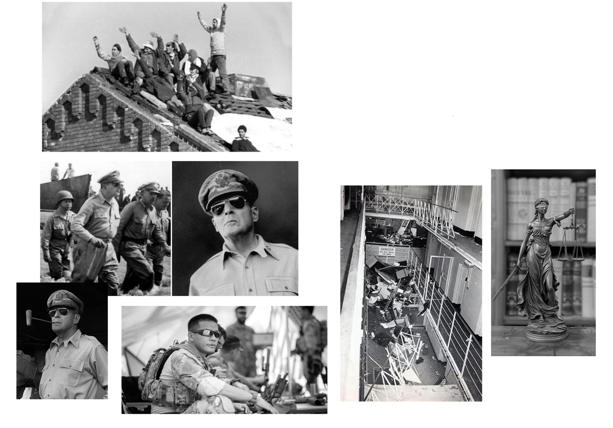
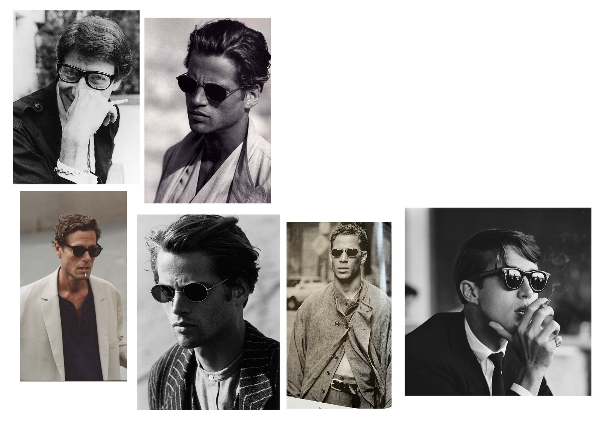
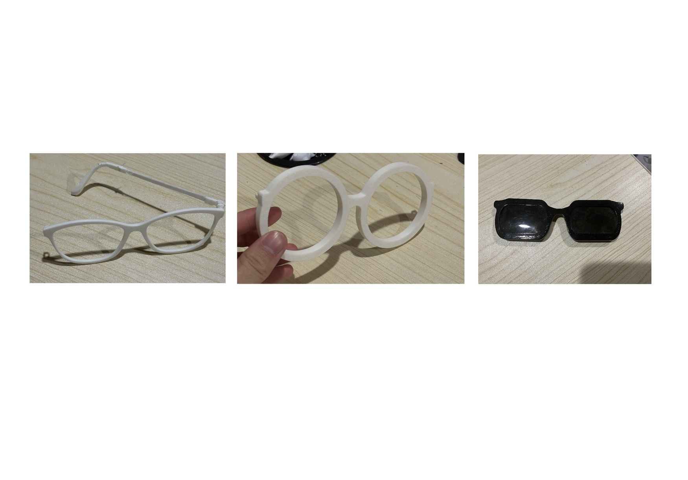
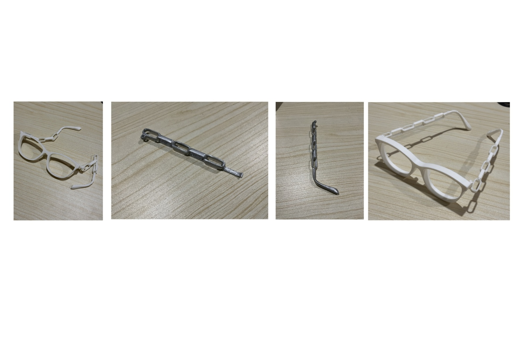

Design Idea

The Strangeways Prison Riot of 1990 led to significant prison reform in the UK. Years later, conditions returned to what they were before. If justice cannot see, it cannot verify. It cannot watch to make sure what it fought for is being kept.
These glasses argue that Lady Justice should not be blind. She should see clearly, without being temporarily blinded by the light of positive change that later disappears. The dark tint is intentional. Light here represents the appearance of progress, moments that blind people into believing justice has been served while deeper problems remain hidden. The tint cuts through that brightness.
The frame shape references sunglasses worn by generals and world leaders, people who make decisions about war and justice from the most secure, windowless rooms on earth. The irony of wearing sunglasses in rooms with no sun is not lost. MF DOOM captured this in Strange Ways: the bosses sit behind desks while others pay the price. The people furthest from the consequences hold the most power.

The frame design focused on exploring variations in shape, scale, and arm thickness. I experimented with different proportions, ranging from more exaggerated silhouettes to refined, minimal forms. These explorations allowed me to understand how subtle changes in geometry could shift the perception of the glasses.
The goal was to create a classic-looking pair of glasses with a subtle abstract twist. By balancing familiar forms with unconventional proportions, the design maintains a sense of familiarity while introducing tension that reflects the project's theme.
Through this process, the final direction aimed to create a design that feels recognizable and wearable, while still carrying conceptual depth through proportion, thickness, and form.
Sketches

Process

The first step was to create a basic pair of glasses to establish the overall shape, proportions, and foundation of the design. This base allowed for further experimentation while maintaining control, ensuring that explorations remained realistic and the construction feasible.
The second prototype explored different frame shapes, beginning with a circular design. One of the main challenges was maintaining a realistic and wearable appearance, as the frame width plays a critical role in both structural integrity and overall balance.
The third prototype explored a square lens design. This iteration felt both realistic and visually compelling, balancing simplicity with an unconventional shape. The minimal form allowed the geometry of the lenses to become the defining feature.

The fourth prototype combined a standard frame shape with the chain arm design. After creating this iteration, it became clear that this direction had the strongest balance. However, this prototype also revealed several functional issues, particularly in the arms components snapping, hinges breaking, and chain links losing rigidity.
To solve this problem three things were changed: the arm design, nozzle size (from 0.4 to 0.2mm making the print more detailed), and print orientation (changed from flat to 45 degrees to get rid of the build plate texture from the print).
CAD Render

Final

The glasses are constructed from two primary components: the frame and the arms. The frame was designed to remain minimal and familiar. Early explorations considered various shapes and sizes, but the final direction moved toward a simple, clean form. This decision was made to create a design that could exist across different social positions.
The arms became the primary area for design exploration. I arrived at a chain structure for three reasons simultaneously. First, physical restraint, the direct material language of confinement and prison. Second, societal connection, each link dependent on the next, a reminder that one act of injustice sets precedent that echoes through every case that follows. Third, metal itself, neutral until shaped by human intent, the same argument that runs through every object in this collection.
Through this contrast, a minimal frame paired with chain arms, the glasses balance neutrality and control, reflecting the tension between justice and injustice.